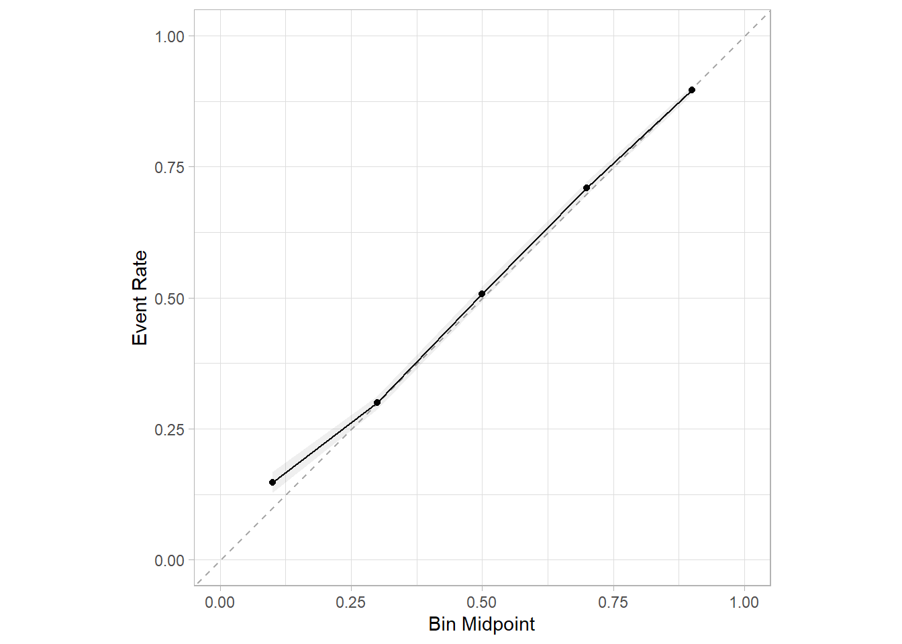
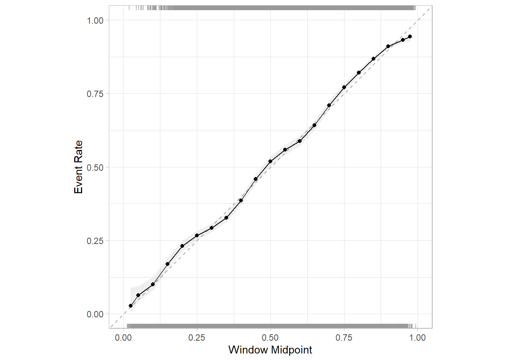
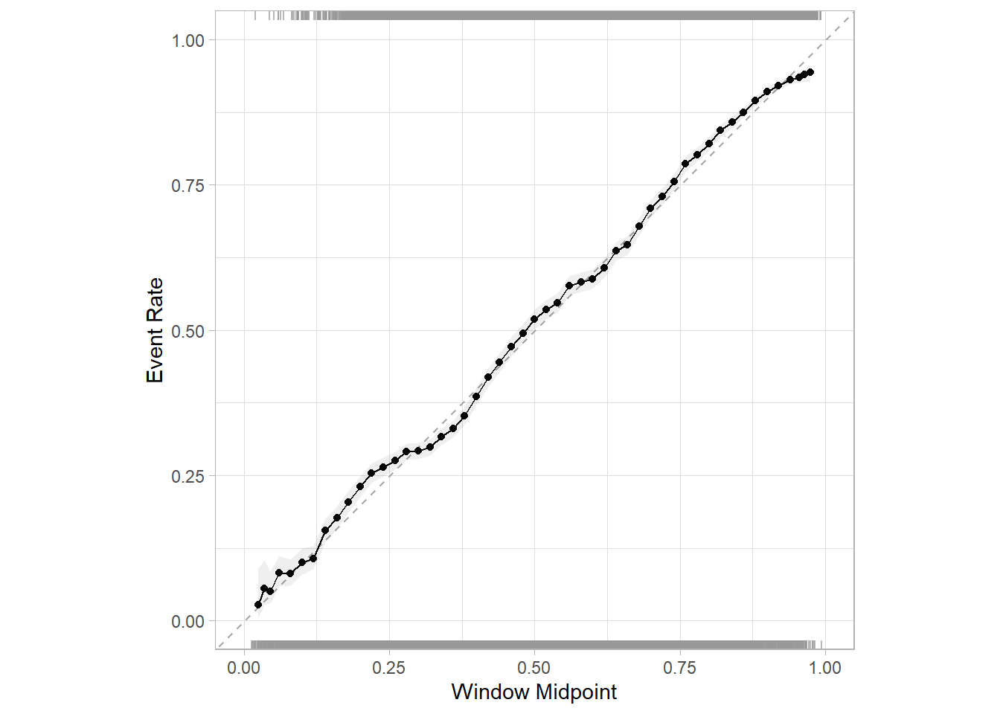

remotes::install_github("tidymodels/probably")36 tidymodels已原生支持校准曲线
喜大普奔!
tidymodels终于支持校准曲线了！千呼万唤始出来，几个月前，我还号召大家多去github提issue…tidymodels不能画校准曲线？
这不，校准曲线就来了！
36.1 安装
截止到2023.3.30日，只能安装开发版才有这个功能，cran上的版本还没有这个功能。
36.2 使用
和yardstick的用法一脉相承，如果你还不知道yardstick以及tidymodels系列的使用规范，请参考这篇入门教程：tidymodels用于机器学习的一些使用细节
我们使用这篇推文中的数据：tidymodels不能画校准曲线？。
具体过程就不再演示了，直接使用pred_rf这个对象进行演示。
rm(list = ls())
suppressMessages(library(tidymodels))
## Warning: package 'tidymodels' was built under R version 4.2.3
## Warning: package 'dplyr' was built under R version 4.2.3
## Warning: package 'ggplot2' was built under R version 4.2.3
## Warning: package 'recipes' was built under R version 4.2.3
## Warning: package 'tibble' was built under R version 4.2.3
## Warning: package 'yardstick' was built under R version 4.2.3
suppressMessages(library(probably))
load(file = "./datasets/pred_rf.rdata")这个结果就是tidymodels中得到的标准结果，一切模型衡量指标都是通过这个结果算出来的，包括校准曲线。
结果长这样：
head(pred_rf)
## # A tibble: 6 × 4
## play_type .pred_pass .pred_run .pred_class
## <fct> <dbl> <dbl> <fct>
## 1 pass 0.312 0.688 run
## 2 pass 0.829 0.171 pass
## 3 pass 0.806 0.194 pass
## 4 pass 0.678 0.322 pass
## 5 run 0.184 0.816 run
## 6 run 0.544 0.456 pass36.2.1 基于分箱的校准曲线
校准曲线是先对概率进行分箱，然后计算平均值得到的，如果你还不明白，请参考这篇推文：一文搞懂临床预测模型的评价！
基于分箱的原理画校准曲线，通过以下函数实现：
pred_rf %>%
cal_plot_breaks(play_type, .pred_pass)有几个参数可以调节：
pred_rf %>%
cal_plot_breaks(play_type, .pred_pass,
num_breaks = 5 , # 选几个点
include_rug=F, # 是否添加地毯线
include_ribbon = T, # 是否添加可信区间
conf_level = 0.95 # 可信区间范围
)
36.2.2 基于窗口滑动的校准曲线
但是有时候样本量太少，不方便分箱，tidymodels提供了一种窗口滑动的方式。
比如一共100个样本，第一次取第1个到第10个样本，然后计算得到一个预测值，第二次取第6个到第15个样本，计算得到一个预测值，第三次取第11个带第20个样本，以此类推，彼此之间是有重复的。
可通过cal_plot_windowed函数实现这样的校准曲线：
pred_rf %>%
cal_plot_windowed(play_type, .pred_pass)
其中step_size参数控制每次增加多少：
# 每次增加2%
pred_rf %>%
cal_plot_windowed(play_type, .pred_pass, step_size = 0.02)
所有这些图都是基于ggplot2的，可以无缝衔接ggplot2语法进行美化、修改。
对于分类模型的校准曲线终于有了！大家有需要的可以用起来了。